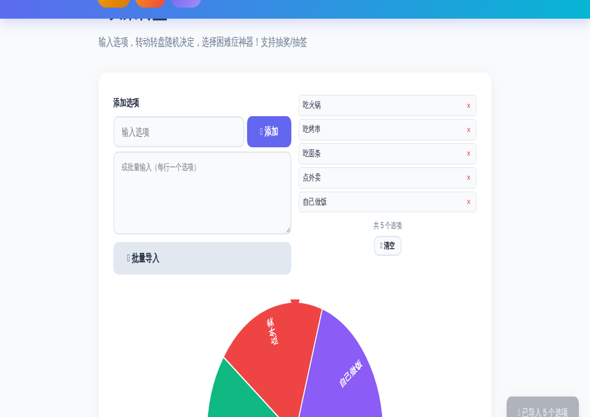
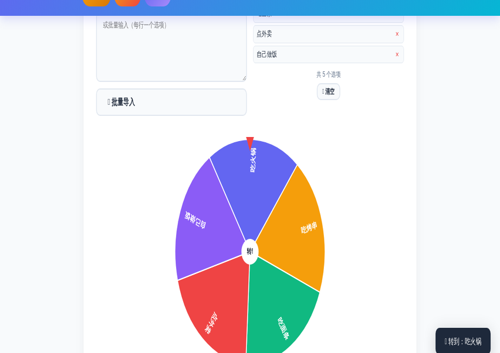
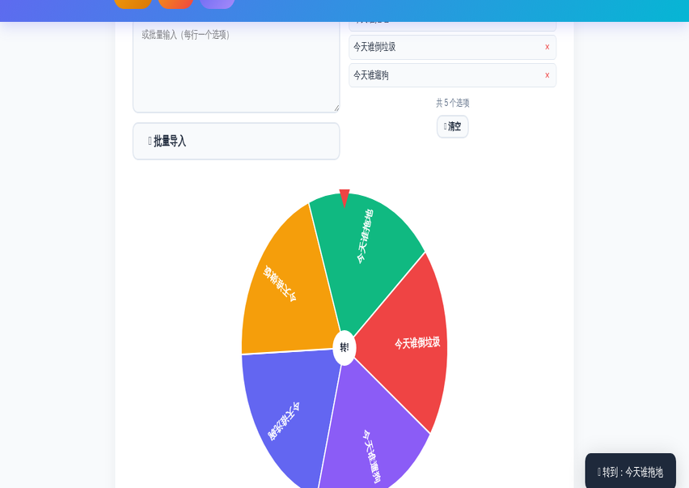

中午吃什么？周末去哪玩？今晚谁洗碗？年终抽奖谁来中？——生活中总有一些"选择困难"时刻，纠结半天不如转一下。
在线决策转盘 就是为这些时刻准备的：把选项填进去，点一下转盘，答案立刻揭晓。支持吃饭选择、抽奖抽签、家务分配、活动点名等各种玩法，全部在浏览器本地运行，免费无限制。
进入 ToolBox 首页，点击「趣味工具」分类，找到「决策转盘」；或者点击下方按钮快速进入。
单个添加：在「添加选项」输入框填一个选项，点「➕ 添加」；批量添加更高效：在下方文本框里每行写一个选项，点「📋 批量导入」即可全部加入。

转盘准备好后，直接点击彩色转盘本身（或等指针停在顶部），它会加速旋转再缓缓停下，转盘动画约 3 秒，紧张感拉满。
转盘每个扇区颜色自动分配，指针固定在顶部——转到哪格全凭运气，公平公正。
转盘停下后，结果会以大字显示在转盘下方，同时弹出提示——今天吃火锅还是点外卖，答案当场揭晓！

换个场景也是一样的操作——比如用转盘决定家务分工：

转盘能用在哪？这里列举最常见的几个：
Q：最多能添加多少个选项？
理论上没有限制，但建议 2-8 个效果最佳。超过 8 个后每个扇区会变窄，转盘上的文字会被精简显示。
Q：结果是真随机吗？
每次转动的角度由浏览器随机生成，旋转过程带物理缓动，无法人为控制结果，公平可靠。
Q：能用于商业抽奖活动吗？
可以。工具免费无限制，投影到大屏幕即可用于线下活动抽奖；本地方案不收集任何数据。
📌 还在纠结？让转盘替你决定吧
🎯 去转动转盘 →